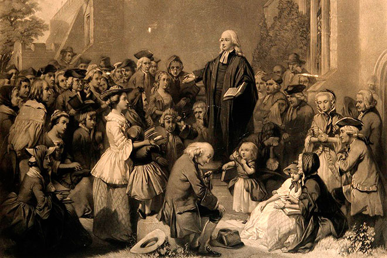

Джон Веслі: методична святість, пробудження і суспільне служіння
Стаття з журналу Благовісник про Джона Веслі, духовне пробудження XVIII століття, народження методистського руху і вплив віри на суспільне життя Британії.
Джон Веслі: методична святість, пробудження і суспільне служіння

Піднімаючи тему самодисципліни та відповідальності в практичному християнському житті, не можна не згадати руху, в основу якого були покладені ці якості. Акцентуючи увагу на важливості особистого освячення, на ретельному та постійному виконанні християнських обов’язків, удосконаленню свого духовного життя, послідовники Джона Веслі увійшли в історію під назвою методисти.
Саме методичне та точне виконання вимог Слова Божого протягом усього життя допомагало цим християнам тримати високо рівень духовності. А почалося все з того, що один англійський священик вирішив впорядкувати своє духовне життя та особисті стосунки з Богом.
Покликання Джона Веслі
Джон Веслі (28 червня 1703 - 2 березня 1791), один з лідерів євангельського пробудження XVIII століття і засновник методистського руху, так окреслив своє призначення:
“Змінити народ, особливо церкву, і поширити біблійну святість по всій землі”.
Усе життя Веслі та його служіння були пройняті цією пристрасною ідеєю. У підсумку, переміна окремих людей, сімей, церков і громад докорінно вплинули на розвиток всього народу Британії. Інші народи, йдучи за Британією в Промислову революцію, запозичували її способи вирішення проблем нової епохи.
Родина і перші кроки віри
У Джона Веслі була чудова мати. Сюзанна Веслі не тільки дала життя сімнадцятьом дітям, але також проводила біблійні заняття для сусідів на своїй, ймовірно, досить великій кухні. Іноді в неї збиралося до 200 чоловік.
Незважаючи на таке релігійне виховання, Джон і його брат Чарльз, вступаючи на навчання в Оксфорд, щоб згодом стати священиками Англіканської церкви, ще не повністю прийняли реформаторське вчення про спасіння через віру. Однак вони не відчували браку в релігійному завзятті й незабаром спільно зі своїм однокурсником Джорджем Вайтфільдом організували Біблійний клуб.
Інші студенти зневажливо називали їх “біблійними хробаками”, “зазнайками” та іншими образливими іменами. Назву методисти, яка закріпилася за ними, вони отримали через ту особливу увагу до ведення впорядкованого, методичного та благочестивого способу життя.
Шторм, страх і свідчення моравських братів
Після того, як Джон отримав духовний сан в Англіканській церкві, він поплив через Атлантику, щоб спробувати себе в ролі священика в новому північноамериканському штаті Джорджія, сподіваючись знайти “справжню віру серед корінних жителів”.
Посеред океану корабель потрапив у жахливий шторм. У своєму щоденнику Веслі описує, як його охопив страх, що корабель розламається - і всі потонуть. Почувши серед шуму бурі церковні пісні, він кинувся через усю палубу до каюти, де жили сім’ї моравських братів, які також прямували до Джорджії.
“Невже ви не боїтеся потонути?” - вигукнув Веслі в сум’ятті.
“Брате, - спокійно відповіли йому, - наше життя в Його руках!”
Ця зустріч привела до того, що згодом назвуть одним із найважливіших покаянь в історії. Спокій духу й непорушна віра, проявлена тими людьми під час молитви посеред бурхливого океану, переконали молодого англійця, що в них є те, чого йому не вистачає.
У Джорджії Веслі зустрівся з керівником громади моравських братів Августом Шпангенбергом, який запитав у Веслі, чи прийняв він Ісуса як свого особистого Спасителя. Пізніше Веслі зізнався у своєму щоденнику, що тоді сказав неправду. Він розумів, що в нього з Ісусом були аж ніяк не тісні стосунки.
Олдерсґейт і внутрішнє навернення
Повернувшись до Лондона після невдалого місіонерського служіння, Веслі став відвідувати біблійні заняття моравських братів. Одного разу, під час читання вголос передмови Лютера до Послання до римлян, він відчув, як його “серце дивним чином наповнилося теплом”.
З тих самих пір, як написав Веслі у своєму щоденнику, він знав, що Христос дійсно помер за його гріхи й що Ісус насправді став його особистим Спасителем.
Прагнучи більше дізнатися про духовність моравських братів, Веслі відправився до Німеччини, щоб побути в Гернгутській громаді, яка пережила в 1727 році злиття Святого Духа, що й стало поштовхом до поширення місіонерства.
Веслі повернувся в Лондон 31 грудня 1738 року саме на служіння в переддень нового року, яке проходило в громаді Феттер Лейн. Тут були присутні Джордж Вайтфільд і Чарльз Веслі. У перші ж години нового року вони пережили злиття Святого Духа, що стало передвісником майбутнього Пробудження.
Проповідь просто неба
Джон, Чарльз і Джордж стали проповідувати спасіння через віру в Ісуса Христа всюди, де тільки мали можливість, кажучи, що не слід ставити знак рівності між “прихожанством” і біблійним християнством. Двері церков зачинялися перед цими “методистами”.
Вайтфільд став читати проповіді шахтарям поблизу Бристоля просто неба та запросив Джона приїхати й допомогти. Джон відправився в Бристоль, але в своєму щоденнику відверто написав, що перспектива проповідування просто неба лякає його.
Він вважав майже гріхом навернути людину до віри поза будівлею церкви. Але якось, проповідуючи членам однієї невеликої громади, він раптом яскраво усвідомив, що його Господь і Спаситель проповідував людям… просто неба.
Наступного дня Джон проповідував трьом тисячам шахтарям, які ніколи раніше не читали Євангелії та які відчули присутність Святого Духа у своєму житті.
Осередки, групи і місіонерський центр
Для навчання навернених християн Веслі й Вайтфільд заснували невеликі гуртки, названі осередками або групами.
У Лондоні Веслі орендував покинутий збройовий завод і відкрив там місіонерський центр. На додаток до церкви, яка вміщала 1500 чоловік, тут же організував безкоштовну лікарню й школу, книжковий магазин і притулок для вдів. Щотижня в центрі проводилося до 60 зібрань.
Веслі став подорожувати верхи на коні з Лондона в Бристоль, далі в Ньюкасл і повертався в Лондон. На цьому шляху він проповідував, навчав новонавернених і об’єднував їх в осередки, групи й громади, відкривав методистські церкви.
Тих, хто володів особливим даром проповідування, він навчав і посилав о 5 ранку на дороги й стежки для проповіді людям, які йшли на роботу.
Новонавернені ставали проповідниками, пасторами і, по суті, засновниками церков, бо організовували громади й осередки по всій країні, наслідуючи приклад свого енергійного лідера.
Масштаб служіння
За своє життя Джон подолав відстань у 250 000 миль, сказав 40 000 проповідей, іноді збираючи на них до 20 000 чоловік без допомоги сучасної техніки.
Він виховав 10 000 лідерів громад і груп, і до 1798 року методистський рух налічував до 100 000 чоловік.
Віра, яка торкається суспільства
Веслі проповідував не просто ідею спасіння особистості, у нього було гостро розвинене почуття громадського співчуття.
Джон Веслі прагнув бачити владу Христа скрізь і в усьому. Він критикував рабство, виступав на підтримку громадянської та релігійної свободи. Попереджав про згубність економічної практики експлуатації бідних і незаможних.
Він організовував в’язальні та швейні цехи для бідних. Протягом 26 років у вільний час Веслі вивчав медицину й анатомію, щоб допомагати тим хворим, хто не міг дозволити собі найняти лікаря.
Боротьба проти рабства
У 1774 році Джон Веслі написав “Роздуми про рабство”, де виступив з різкою критикою цього явища в суспільстві, яке спиралося на підтримку правлячих кіл, у тому числі й державної церкви.
За три дні до своєї смерті Веслі писав молодому християнському парламентарю Вільяму Вільберфорсе, закликаючи його наполегливо боротися проти рабства до тих пір, поки це зло не буде викорінено з Англії.
У результаті торгівля рабами була визнана незаконною в 1807 році, а всі раби в Англії були звільнені в 1833-му.
Спадщина методистського руху
Методистський рух із його сильним акцентом на індивідуальному покаянні й благочесті пробудив національно-суспільну свідомість, і це зберегло Англію від кривавих революційних сутичок на зразок тих, що захопили Францію в кінці XVIII століття.
Джерело: “Благовісник”, № 2, 2018.